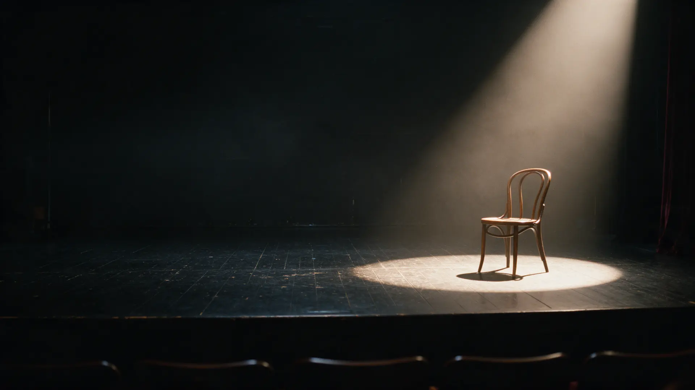
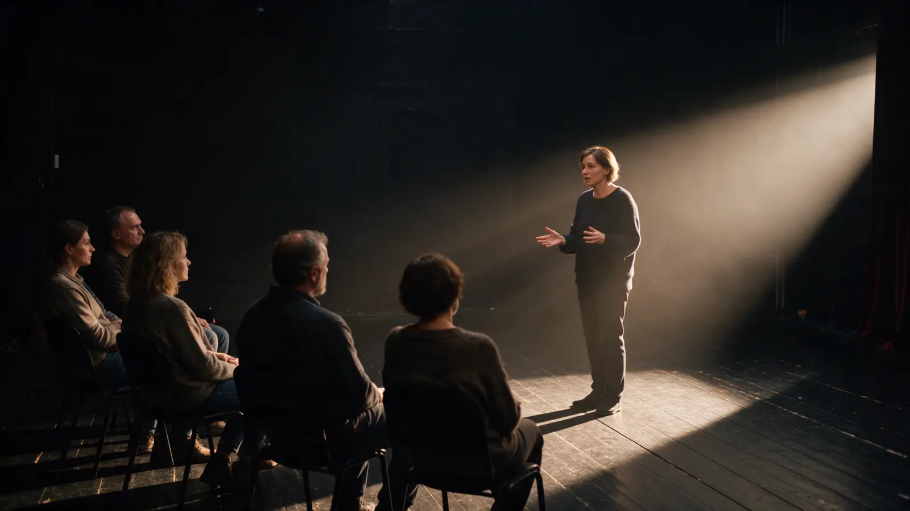
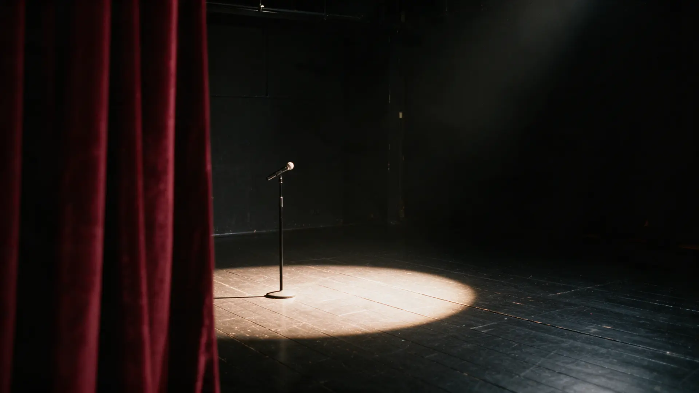

Демо для No Shame по заказу «Сайт мобильная версия 5 страниц»
Актёрское мастерство и речь – чтобы перестать стесняться
Выходите на сцену собственной жизни: ставим голос, снимаем зажимы и учимся держать внимание людей.
ЗаписатьсяЗнаете, что сказать, – но голос подводит
- На совещании голос садится, а мысль теряется на середине фразы.
- Перед выступлением ночь без сна, а после – «надо было сказать иначе».
- Среди своих вы свободны и остроумны. На людях – зажим и чужой голос.
Это не характер, а навык. Ему учат актёров – и этому может научиться любой взрослый, без театрального прошлого.

Как проходит занятие
Не лекция о том, как надо, а практика: каждый выходит в свет и пробует сам – в безопасной группе, где никто не оценивает.
- 1
Разминка
Дыхание, голос и тело – снимаем дневное напряжение.
- 2
Упражнения
Дикция, интонация, этюды в парах и в группе.
- 3
Выход
Каждый пробует себя перед остальными.
- 4
Разбор
Мастер говорит, что получилось и над чем работать дальше.
Расписание, формат и стоимость – расскажем в Telegram.

Сцена ждёт. Первый шаг – просто прийти
Напишите в Telegram – подберём группу и время, ответим на вопросы.